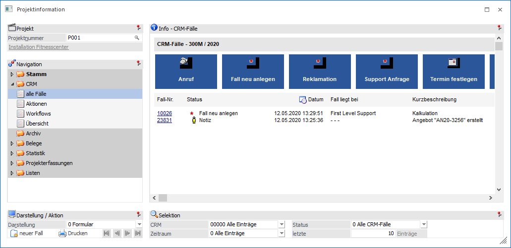
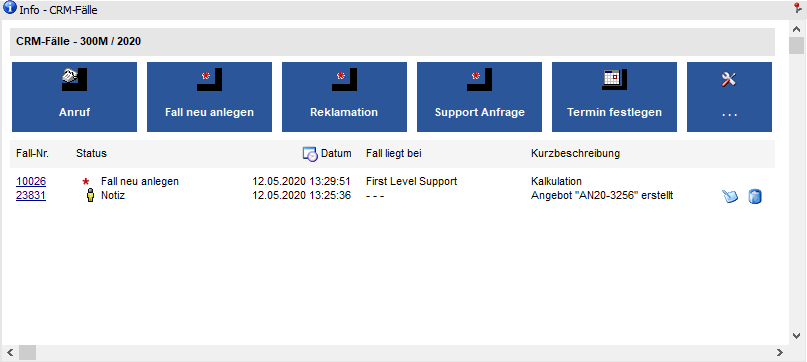
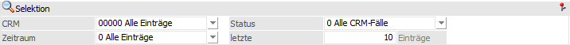
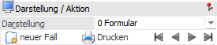

Projektinformation - Bereich "CRM" - Ansicht "alle Fälle"
In der Ansicht "alle Fälle" werden CRM Fälle der Typen "CRM Aktion" und "CRM Workflow" angezeigt, welche für das Projekt erfasst wurden. Die Darstellung kann hierbei in Form einer Formularansicht oder als Tabelle erfolgen.

Die Ansicht "alle Fälle" besteht aus den folgenden Info-Elementen:
ü Info - CRM-Fälle
ü Selektion
ü Darstellung / Aktion
Info - CRM-Fälle

An dieser Stelle werden die CRM-Fälle, gemäß der nachfolgenden Selektion, dargestellt. Die Art der Anzeige kann mit Hilfe der Option "Darstellung" gewählt werden.
Ø  CRM-Fall bearbeiten
CRM-Fall bearbeiten
Durch Anwahl dieses Buttons kann ein angelegter CRM-Fall des Typs "CRM Aktion" bearbeitet werden.
Hinweis
Für die Bearbeitung eines Falls des Typs "CRM Workflow" muss zunächst die Fallansicht (per Anwahl der Fallnummer) geöffnet werden.
Ø  CRM-Fall löschen
CRM-Fall löschen
Mit Hilfe dieses Buttons kann ein Fall des Typs "CRM Aktion" gelöscht werden.
Selektion

In diesem Bereich kann definiert werden, welche bzw. wie viele CRM-Fälle dargestellt werden sollen. Die gewählten Einstellungen werden benutzerspezifisch gespeichert.
Ø CRM
An dieser Stelle wird aufgrund der angezeigten CRM-Fälle eine dynamische Selektionsauswahl gebildet.
Ø Zeitraum
Über die Auswahlbox kann bestimmt werden, aus welchem Zeitraum die CRM-Fälle stammen sollen. Hierbei wird auf das Feld "Datum Schritt geschrieben" aus dem CRM-Fall zugegriffen. Folgende Einstellungsmöglichkeiten stehen zur Verfügung:
ü 0 - Alle Einträge
ü 1 - das letzte Jahr
ü 2 - das letzte Halbjahr
ü 3 - das letzte Quartal
ü 4 - der letzte Monat
ü 5 - die letzte Woche
ü 6 - heute
ü 7 - Alle Einträge mit Gruppensortierung
Ø Status
Mit Hilfe dieser Auswahlliste kann definiert werden, ob alle CRM-Fälle oder nur offene bzw. erledigte (jeweils mit oder ohne CRM-Aktionen) angezeigt werden sollen.
Ø letzte x Einträge
An dieser Stelle kann die Anzahl der maximal anzuzeigenden CRM-Fälle hinterlegt werden.
Darstellung / Aktion

Ø Darstellung
An dieser Stelle kann mit Hilfe einer Auswahlliste gewählt werden, ob die Darstellung der Fälle in Form eines Formulars oder einer Tabelle erfolgen soll.
Ø neuer Fall
Durch Anwählen dieses Buttons kann ein weiterer CRM-Fall gestartet werden. Dabei stehen maximal 5 Aktionen / Workflows direkt zur Auswahl und ein weiterer Eintrag mit der Bezeichnung "Auswahl", über welchen das Fenster "Neuer Fall" aufgerufen werden kann.
Hinweis
Bei den vorgeschlagenen Aktionen / Workflows handelt es sich zum einen um jene, die in den Favoriten abgelegt sind und zusätzlich - in dieser Reihenfolge - um jene, welche zuletzt verwendet wurden. Treffen diese beiden Kriterien nicht zu, dann werden die ersten Aktionen / Workflows vorgeschlagen.
Ø  Drucken
Drucken
Durch Anwahl dieses Buttons wird die Formularansicht ausgedruckt.
Ø  VCR-Buttons
VCR-Buttons
Sollte die Anzeige der CRM-Fälle in der Formularansicht über mehrere Seiten dargestellt werden, so kann mit Hilfe der VCR-Buttons zwischen den einzelnen Seiten gewechselt werden.